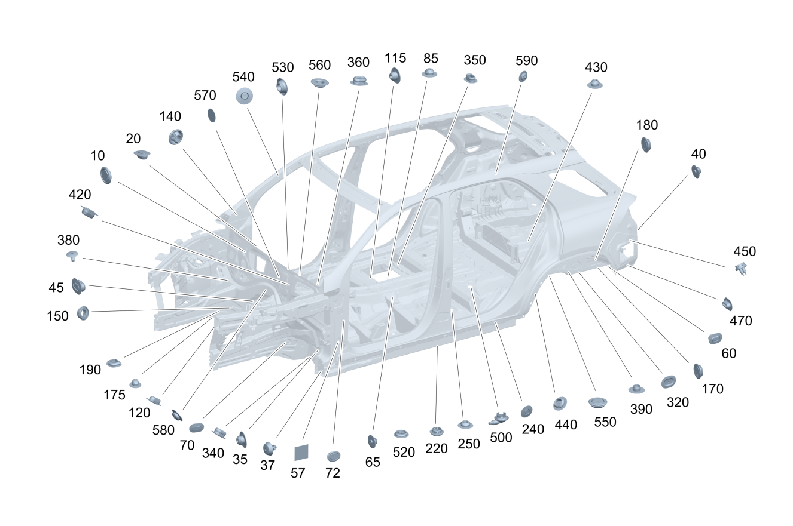

| № | Артикул | Название | Кол. | Примечание | Ограничение |
|---|---|---|---|---|---|
| 10 | A 000 998 06 90 | Запорная шайба (VERSCHLUSSSCHEIBE) | 1 | Моторный щит, снизу справа; 20X30 MM | |
| 10 | A 000 998 06 90 | Запорная шайба (VERSCHLUSSSCHEIBE) | 1 | Моторный щит, сверху слева; 20X30 MM Рулевое управление: Влево | |
| 10 | A 000 998 06 90 | Запорная шайба (VERSCHLUSSSCHEIBE) | 1 | Моторный щит, сверху справа; 20X30 MM Рулевое управление: Вправо | |
| 10 | A 001 998 51 50 | Пробка (VERSCHLUSSSTOPFEN) | 1 | Моторный щит, сверху справа; 10 MM Рулевое управление: Влево | |
| 10 | A 001 998 51 50 | Пробка (VERSCHLUSSSTOPFEN) | 1 | Моторный щит, снизу справа; 10 MM | |
| 10 | A 001 998 51 50 | Пробка (VERSCHLUSSSTOPFEN) | 1 | Моторный щит (нижняя центральная зона, передняя сторона); 10 MM | |
| 10 | A 001 998 51 50 | Пробка (VERSCHLUSSSTOPFEN) | 1 | Моторный щит, сверху слева; 10 MM Рулевое управление: Вправо | |
| 10 | A 002 998 56 50 | Пробка (VERSCHLUSSSTOPFEN) | 1 | Моторный щит (нижняя центральная зона, передняя сторона); 10 X 20MM | |
| 10 | A 002 998 56 50 | Пробка (VERSCHLUSSSTOPFEN) | 1 | Моторный щит, снизу слева; 10 X 20MM | |
| 10 | A 002 998 56 50 | Пробка (VERSCHLUSSSTOPFEN) | 1 | Моторный щит, снизу слева; 10 X 20MM Рулевое управление: Влево | |
| 10 | A 002 998 56 50 | Пробка (VERSCHLUSSSTOPFEN) | 1 | Моторный щит, сверху справа; 10 X 20MM Рулевое управление: Вправо | |
| 10 | A 003 998 14 50 | Пробка (VERSCHLUSSSTOPFEN) | 1 | Моторный щит (нижняя центральная зона, передняя сторона); 20 MM | |
| 10 | A 003 997 67 86 | Пробка (VERSCHLUSSSTOPFEN) | 1 | Передняя стойка слева; 30 MM Рулевое управление: Влево | |
| 10 | A 000 998 46 03 | Пробка (VERSCHLUSSSTOPFEN) | 1 | Передняя стойка слева; 30 MM Рулевое управление: Влево | |
| 10 | A 003 997 67 86 | Пробка (VERSCHLUSSSTOPFEN) | 1 | Моторный щит, сверху слева; 30 MM Рулевое управление: Вправо | |
| 10 | A 000 998 46 03 | Пробка (VERSCHLUSSSTOPFEN) | 1 | Моторный щит, сверху слева; 30 MM Рулевое управление: Вправо | |
| 10 | A 001 998 81 50 | Пробка (VERSCHLUSSSTOPFEN) | 1 | Моторный щит, сверху слева; 40 MM | |
| 20 | A 001 998 51 50 | Пробка (VERSCHLUSSSTOPFEN) | 1 | Поперечина под ветровым стеклом слева; 10 MM | |
| 20 | A 001 998 51 50 | Пробка (VERSCHLUSSSTOPFEN) | 1 | Поперечина ветрового стекла (левая сторона); 10 MM | |
| 20 | A 002 998 56 50 | Пробка (VERSCHLUSSSTOPFEN) | 1 | Поперечина под ветровым стеклом справа; 10 X 20MM | |
| 20 | A 002 998 56 50 | Пробка (VERSCHLUSSSTOPFEN) | 1 | Поперечина под ветровым стеклом слева; 10 X 20MM | |
| 20 | A 003 998 13 50 | Пробка (VERSCHLUSSSTOPFEN) | 1 | Поперечина ветрового стекла (правая сторона); 15 MM | |
| 20 | A 003 998 13 50 | Пробка (VERSCHLUSSSTOPFEN) | 1 | Поперечина под ветровым стеклом справа; 15 MM | |
| 20 | A 003 998 13 50 | Пробка (VERSCHLUSSSTOPFEN) | 1 | Поперечина под ветровым стеклом; 15 MM | |
| 20 | A 003 998 13 50 | Пробка (VERSCHLUSSSTOPFEN) | 1 | Поперечина под ветровым стеклом слева; 15 MM | |
| 35 | A 001 998 51 50 | Пробка (VERSCHLUSSSTOPFEN) | 1 | К поперечине снаружи слева; 10 MM | |
| 40 | A 001 998 51 50 | Пробка (VERSCHLUSSSTOPFEN) | 1 | Поперечина сзади, слева; 10 MM | |
| 45 | A 001 998 51 50 | Пробка (VERSCHLUSSSTOPFEN) | 1 | К поперечине спереди; 10 MM | |
| 45 | A 002 998 56 50 | Пробка (VERSCHLUSSSTOPFEN) | 1 | К поперечине спереди; 10 X 20MM | |
| 57 | A 003 989 82 85 | Отрез клейкой ленты (KLEBEBANDZUSCHNITT) | 1 | Лонжерон вверху \- нижняя часть \- передняя стойка кузова слева; 30X30X0.29 | |
| 57 | A 003 989 82 85 | Отрез клейкой ленты (KLEBEBANDZUSCHNITT) | 1 | Передняя стойка справа; 30X30X0.29 | |
| 57 | A 004 989 52 85 | Отрез клейкой ленты (KLEBEBANDZUSCHNITT) | 1 | Лонжерон вверху \- верхняя часть \- передняя стойка кузова слева; 70X70 MM [409] ПРИ МОНТАЖЕ ПОДОГНАТЬ ПО МЕСТУ | |
| 57 | A 004 989 52 85 | Отрез клейкой ленты (KLEBEBANDZUSCHNITT) | 1 | Передняя стойка слева; 70X70 MM [409] ПРИ МОНТАЖЕ ПОДОГНАТЬ ПО МЕСТУ | |
| 57 | A 004 989 52 85 | Отрез клейкой ленты (KLEBEBANDZUSCHNITT) | 1 | Облицовка сверху передней стойки кузова справа; 70X70 MM [409] ПРИ МОНТАЖЕ ПОДОГНАТЬ ПО МЕСТУ | |
| 57 | A 004 989 52 85 | Отрез клейкой ленты (KLEBEBANDZUSCHNITT) | 1 | Передняя стойка справа, снизу; 70X70 MM [409] ПРИ МОНТАЖЕ ПОДОГНАТЬ ПО МЕСТУ | |
| 60 | A 000 998 06 90 | Запорная шайба (VERSCHLUSSSCHEIBE) | 1 | На нижней стороне левого лонжерона; 20X30 MM | |
| 60 | A 000 998 06 90 | Запорная шайба (VERSCHLUSSSCHEIBE) | 1 | К продольному несущему элементу справа, снизу; 20X30 MM | |
| 60 | A 000 998 06 90 | Запорная шайба (VERSCHLUSSSCHEIBE) | 1 | Лонжерон сзади посередине справа; 20X30 MM | |
| 60 | A 000 998 06 90 | Запорная шайба (VERSCHLUSSSCHEIBE) | 1 | Лонжерон сзади посередине слева; 20X30 MM | |
| 60 | A 000 998 06 90 | Запорная шайба (VERSCHLUSSSCHEIBE) | 1 | К продольному несущему элементу сзади справа; 20X30 MM | |
| 60 | A 001 998 51 50 | Пробка (VERSCHLUSSSTOPFEN) | 1 | Продольный несущий элемент сзади слева; 10 MM | |
| 60 | A 001 998 51 50 | Пробка (VERSCHLUSSSTOPFEN) | 1 | Лонжерон задний правый (внутренняя сторона); 10 MM | |
| 60 | A 001 998 51 50 | Пробка (VERSCHLUSSSTOPFEN) | 1 | Лонжерон задний левый (задняя зона); 10 MM | |
| 60 | A 001 998 51 50 | Пробка (VERSCHLUSSSTOPFEN) | 1 | На заднем лонжероне (внешн. лев.); 10 MM | |
| 60 | A 001 998 51 50 | Пробка (VERSCHLUSSSTOPFEN) | 1 | На заднем лонжероне (внешн. прав.); 10 MM | |
| 60 | A 001 998 51 50 | Пробка (VERSCHLUSSSTOPFEN) | 1 | Лонжерон задний правый (задняя зона); 10 MM | |
| 60 | A 002 998 56 50 | Пробка (VERSCHLUSSSTOPFEN) | 1 | На заднем лонжероне (внутр. лев.); 10 X 20MM | |
| 60 | A 002 998 56 50 | Пробка (VERSCHLUSSSTOPFEN) | 1 | На заднем лонжероне (внутр. прав.); 10 X 20MM | |
| 60 | A 003 998 13 50 | Пробка (VERSCHLUSSSTOPFEN) | 1 | К лонжерону справа; 15 MM | |
| 60 | A 003 998 13 50 | Пробка (VERSCHLUSSSTOPFEN) | 1 | К лонжерону слева; 15 MM | |
| 60 | A 003 998 13 50 | Пробка (VERSCHLUSSSTOPFEN) | 1 | На нижней стороне левого лонжерона; 15 MM | |
| 60 | A 003 998 13 50 | Пробка (VERSCHLUSSSTOPFEN) | 1 | К продольному несущему элементу снизу справа; 15 MM | |
| 60 | A 003 998 14 50 | Пробка (VERSCHLUSSSTOPFEN) | 1 | К продольному несущему элементу изнутри слева; 20 MM | |
| 60 | A 003 998 14 50 | Пробка (VERSCHLUSSSTOPFEN) | 1 | Лонжерон задний правый (нижняя сторона); 20 MM | |
| 60 | A 003 998 14 50 | Пробка (VERSCHLUSSSTOPFEN) | 1 | Лонжерон правый (внешняя сторона); 20 MM | |
| 60 | A 003 998 46 50 | Пробка (VERSCHLUSSSTOPFEN) | 1 | К продольному несущему элементу снизу изнутри слева; 15X25MM | |
| 60 | A 003 998 46 50 | Пробка (VERSCHLUSSSTOPFEN) | 1 | К продольному несущему элементу изнутри справа; 15X25MM | |
| 60 | A 000 998 09 90 | Пробка (STOPFEN) | 1 | К лонжерону справа, вверху; 20 MM | |
| 60 | A 000 998 09 90 | Пробка (STOPFEN) | 1 | К лонжерону слева, вверху; 20 MM | |
| 60 | A 001 998 51 50 | Пробка (VERSCHLUSSSTOPFEN) | 1 | Лонжерон задний левый (внутренняя сторона); 10 MM | |
| 65 | A 001 998 51 50 | Пробка (VERSCHLUSSSTOPFEN) | 1 | Туннель коробки передач спереди слева; 10 MM | |
| 70 | A 000 998 06 90 | Запорная шайба (VERSCHLUSSSCHEIBE) | 1 | Лонжерон спереди слева; 20X30 MM | |
| 70 | A 000 998 06 90 | Запорная шайба (VERSCHLUSSSCHEIBE) | 1 | Лонжерон спереди справа; 20X30 MM | |
| 70 | A 001 998 51 50 | Пробка (VERSCHLUSSSTOPFEN) | 1 | Лонжерон спереди слева; 10 MM | |
| 70 | A 001 998 51 50 | Пробка (VERSCHLUSSSTOPFEN) | 1 | Лонжерон спереди справа; 10 MM | |
| 70 | A 002 998 56 50 | Пробка (VERSCHLUSSSTOPFEN) | 1 | Спереди слева; 10 X 20MM | |
| 70 | A 002 998 56 50 | Пробка (VERSCHLUSSSTOPFEN) | 1 | Лонжерон спереди слева; 10 X 20MM | |
| 70 | A 002 998 56 50 | Пробка (VERSCHLUSSSTOPFEN) | 1 | Колесная арка слева спереди; 10 X 20MM | |
| 70 | A 002 998 56 50 | Пробка (VERSCHLUSSSTOPFEN) | 1 | Спереди справа; 10 X 20MM | |
| 70 | A 002 998 56 50 | Пробка (VERSCHLUSSSTOPFEN) | 1 | Лонжерон спереди справа; 10 X 20MM | |
| 70 | A 002 998 56 50 | Пробка (VERSCHLUSSSTOPFEN) | 1 | Колесная арка справа спереди; 10 X 20MM | |
| 70 | A 003 998 14 50 | Пробка (VERSCHLUSSSTOPFEN) | 1 | Колесная арка слева спереди; 20 MM | |
| 70 | A 003 998 14 50 | Пробка (VERSCHLUSSSTOPFEN) | 1 | Спереди слева; 20 MM | |
| 70 | A 003 998 14 50 | Пробка (VERSCHLUSSSTOPFEN) | 1 | Лонжерон спереди слева; 20 MM | |
| 70 | A 003 998 14 50 | Пробка (VERSCHLUSSSTOPFEN) | 1 | Под основным днищем справа; 20 MM | |
| 70 | A 003 998 14 50 | Пробка (VERSCHLUSSSTOPFEN) | 1 | Колесная арка справа спереди; 20 MM | |
| 70 | A 003 998 14 50 | Пробка (VERSCHLUSSSTOPFEN) | 1 | Лонжерон передний левый (внутренняя сторона); 20 MM | |
| 70 | A 003 998 14 50 | Пробка (VERSCHLUSSSTOPFEN) | 1 | Спереди справа; 20 MM | |
| 70 | A 003 998 14 50 | Пробка (VERSCHLUSSSTOPFEN) | 1 | Продольный несущий элемент спереди; 20 MM | |
| 70 | A 003 998 14 50 | Пробка (VERSCHLUSSSTOPFEN) | 1 | Лонжерон спереди справа; 20 MM | |
| 70 | A 003 998 14 50 | Пробка (VERSCHLUSSSTOPFEN) | 1 | Под сиденьем водителя, спереди справа; 20 MM | |
| 72 | A 000 998 45 03 | Пробка (VERSCHLUSSSTOPFEN) | 1 | Передняя стойка справа; 25 MM | |
| 72 | A 000 998 45 03 | Пробка (VERSCHLUSSSTOPFEN) | 1 | Передняя стойка слева; 25 MM | |
| 85 | A 001 998 51 50 | Пробка (VERSCHLUSSSTOPFEN) | 1 | Крепёжная консоль (центральная правая); 10 MM | |
| 115 | A 001 998 51 50 | Пробка (VERSCHLUSSSTOPFEN) | 1 | Под сиденьем переднего пассажира; 10 MM | |
| 115 | A 001 998 51 50 | Пробка (VERSCHLUSSSTOPFEN) | 1 | Под центральной консолью; 10 MM | |
| 115 | A 001 998 51 50 | Пробка (VERSCHLUSSSTOPFEN) | 1 | Под сиденьем водителя, спереди слева; 10 MM | |
| 115 | A 002 998 56 50 | Пробка (VERSCHLUSSSTOPFEN) | 1 | Под сиденьем водителя, спереди справа; 10 X 20MM | |
| 115 | A 002 998 56 50 | Пробка (VERSCHLUSSSTOPFEN) | 1 | Поперечина под сиденьем водителя; 10 X 20MM | |
| 115 | A 002 998 56 50 | Пробка (VERSCHLUSSSTOPFEN) | 1 | Под сиденьем переднего пассажира; 10 X 20MM | |
| 115 | A 002 998 55 50 | Пробка (VERSCHLUSSSTOPFEN) | 1 | Боковина кузова слева | |
| 115 | A 002 998 55 50 | Пробка (VERSCHLUSSSTOPFEN) | 1 | Боковина кузова справа | |
| 120 | A 001 998 51 50 | Пробка (VERSCHLUSSSTOPFEN) | 1 | Усилитель посередине; 10 MM | |
| 120 | A 000 998 45 03 | Пробка (VERSCHLUSSSTOPFEN) | 1 | Усилитель посередине; 25 MM | |
| 120 | A 000 998 45 03 | Пробка (VERSCHLUSSSTOPFEN) | 1 | Крепление элемента жесткости посередине; 25 MM | |
| 120 | A 000 998 45 03 | Пробка (VERSCHLUSSSTOPFEN) | 1 | Вибро\- и шумоизоляция внутри посредине слева Туннель трансмиссии; 25 MM | |
| 120 | A 000 998 45 03 | Пробка (VERSCHLUSSSTOPFEN) | 1 | Туннель трансмиссии, сверху; 25 MM | |
| 120 | A 000 998 45 03 | Пробка (VERSCHLUSSSTOPFEN) | 1 | Центральный туннель (передняя секция); 25 MM | |
| 120 | A 000 998 45 03 | Пробка (VERSCHLUSSSTOPFEN) | 1 | Центральный туннель (правая сторона); 25 MM | |
| 120 | A 002 998 56 50 | Пробка (VERSCHLUSSSTOPFEN) | 1 | Пол под водителем слева; 10 X 20MM | |
| 120 | A 002 998 56 50 | Пробка (VERSCHLUSSSTOPFEN) | 1 | Усилитель слева; 10 X 20MM | |
| 120 | A 002 998 56 50 | Пробка (VERSCHLUSSSTOPFEN) | 1 | Усилитель справа; 10 X 20MM | |
| 120 | A 002 998 56 50 | Пробка (VERSCHLUSSSTOPFEN) | 1 | Усилитель посередине; 10 X 20MM | |
| 140 | A 001 998 70 50 | Пробка (VERSCHLUSSSTOPFEN) | 2 | Передняя левая стойка кузова(/кабины) (внутренняя секция / верхняя зона) | |
| 150 | A 000 998 30 07 | Запорная шайба (VERSCHLUSSSCHEIBE) | 2 | 806+056/807/808 | |
| 150 | A 000 998 30 07 | Запорная шайба (VERSCHLUSSSCHEIBE) | 2 | ||
| 170 | A 000 998 45 03 | Пробка (VERSCHLUSSSTOPFEN) | 1 | Масса поперечины в задней части салона, справа; 25 MM | |
| 170 | A 000 998 45 03 | Пробка (VERSCHLUSSSTOPFEN) | 1 | Поперечина сзади, слева; 25 MM | |
| 175 | A 001 998 51 50 | Пробка (VERSCHLUSSSTOPFEN) | 1 | Поперечина сзади, справа изнутри; 10 MM | |
| 175 | A 001 998 51 50 | Пробка (VERSCHLUSSSTOPFEN) | 1 | Поперечина сзади, слева изнутри; 10 MM | |
| 180 | A 000 998 45 03 | Пробка (VERSCHLUSSSTOPFEN) | 1 | Масса поперечины в задней части салона, справа; 25 MM | |
| 180 | A 000 998 45 03 | Пробка (VERSCHLUSSSTOPFEN) | 1 | Поперечина сзади, слева; 25 MM | |
| 190 | A 000 998 44 03 | PLUG (VERSCHLUSSSTOPFEN) | 1 | На нижней стороне левого лонжерона | |
| 190 | A 000 998 44 03 | PLUG (VERSCHLUSSSTOPFEN) | 1 | К продольному несущему элементу снизу справа | |
| 220 | A 001 998 55 01 | Сливная втулка (WASSERABLAUFTUELLE) | 1 | Порог снаружи слева; 25MM | |
| 220 | A 001 998 55 01 | Сливная втулка (WASSERABLAUFTUELLE) | 1 | Усиливающий элемент спереди лонжерон слева спереди; 25MM | |
| 220 | A 001 998 55 01 | Сливная втулка (WASSERABLAUFTUELLE) | 1 | Крепление провода аккумуляторной батареи, лонжерон слева; 25MM | |
| 220 | A 001 998 55 01 | Сливная втулка (WASSERABLAUFTUELLE) | 1 | Аккумуляторная батарея спереди; 25MM | |
| 220 | A 001 998 55 01 | Сливная втулка (WASSERABLAUFTUELLE) | 1 | Продольный несущий элемент справа; 25MM | |
| 220 | A 001 998 55 01 | Сливная втулка (WASSERABLAUFTUELLE) | 1 | Порог снаружи справа; 25MM | |
| 220 | A 003 998 13 50 | Пробка (VERSCHLUSSSTOPFEN) | 1 | Продольный несущий элемент изнутри слева; 15 MM | |
| 220 | A 003 998 13 50 | Пробка (VERSCHLUSSSTOPFEN) | 1 | Продольный несущий элемент изнутри справа; 15 MM | |
| 220 | A 003 998 13 50 | Пробка (VERSCHLUSSSTOPFEN) | 1 | Порог снаружи слева; 15 MM | |
| 220 | A 003 998 13 50 | Пробка (VERSCHLUSSSTOPFEN) | 1 | Порог снаружи справа; 15 MM | |
| 220 | A 003 998 13 50 | Пробка (VERSCHLUSSSTOPFEN) | 1 | Продольный несущий элемент слева; 15 MM | |
| 220 | A 003 998 13 50 | Пробка (VERSCHLUSSSTOPFEN) | 1 | Продольный несущий элемент справа; 15 MM | |
| 220 | A 003 998 14 50 | Пробка (VERSCHLUSSSTOPFEN) | 1 | Порог снаружи слева; 20 MM | |
| 220 | A 003 998 14 50 | Пробка (VERSCHLUSSSTOPFEN) | 1 | Усиливающий элемент сверху спереди лонжерон слева спереди; 20 MM | |
| 220 | A 003 998 14 50 | Пробка (VERSCHLUSSSTOPFEN) | 1 | Порог снаружи справа; 20 MM | |
| 220 | A 003 998 14 50 | Пробка (VERSCHLUSSSTOPFEN) | 1 | Лонжерон задний левый (передняя зона); 20 MM | |
| 220 | A 003 998 14 50 | Пробка (VERSCHLUSSSTOPFEN) | 1 | Усиливающий элемент сверху спереди лонжерон справа спереди; 20 MM | |
| 220 | A 003 998 14 50 | Пробка (VERSCHLUSSSTOPFEN) | 1 | Продольный несущий элемент спереди; 20 MM | |
| 220 | A 003 998 14 50 | Пробка (VERSCHLUSSSTOPFEN) | 1 | Боковина слева, снизу; 20 MM | |
| 220 | A 003 998 14 50 | Пробка (VERSCHLUSSSTOPFEN) | 1 | Боковина справа, снизу; 20 MM | |
| 220 | A 003 998 14 50 | Пробка (VERSCHLUSSSTOPFEN) | 1 | Под сиденьем переднего пассажира; 20 MM | |
| 220 | A 003 998 14 50 | Пробка (VERSCHLUSSSTOPFEN) | 1 | Продольный несущий элемент слева; 20 MM | |
| 220 | A 003 998 14 50 | Пробка (VERSCHLUSSSTOPFEN) | 1 | Продольный несущий элемент справа; 20 MM | |
| 220 | A 003 998 14 50 | Пробка (VERSCHLUSSSTOPFEN) | 1 | Продольный несущий элемент изнутри слева; 20 MM | |
| 220 | A 003 998 14 50 | Пробка (VERSCHLUSSSTOPFEN) | 1 | Продольный несущий элемент посередине; 20 MM | |
| 220 | A 003 998 14 50 | Пробка (VERSCHLUSSSTOPFEN) | 1 | Слева снаружи; 20 MM | |
| 220 | A 003 998 14 50 | Пробка (VERSCHLUSSSTOPFEN) | 1 | Справа снаружи; 20 MM | |
| 220 | A 003 998 14 50 | Пробка (VERSCHLUSSSTOPFEN) | 1 | Продольный несущий элемент внизу слева; 20 MM | |
| 220 | A 003 998 14 50 | Пробка (VERSCHLUSSSTOPFEN) | 1 | Справа изнутри; 20 MM | |
| 220 | A 003 998 14 50 | Пробка (VERSCHLUSSSTOPFEN) | 1 | Лонжерон задний правый (передняя зона); 20 MM | |
| 220 | A 003 998 14 50 | Пробка (VERSCHLUSSSTOPFEN) | 1 | Под покрытием пола со стороны водителя; 20 MM | |
| 220 | A 003 998 14 50 | Пробка (VERSCHLUSSSTOPFEN) | 1 | Передн. прав.; 20 MM | |
| 220 | A 003 998 14 50 | Пробка (VERSCHLUSSSTOPFEN) | 1 | Усиливающий элемент спереди лонжерон слева спереди; 20 MM | |
| 220 | A 003 998 46 50 | Пробка (VERSCHLUSSSTOPFEN) | 1 | Порог снаружи справа; 15X25MM | |
| 220 | A 003 998 46 50 | Пробка (VERSCHLUSSSTOPFEN) | 1 | Порог снаружи слева; 15X25MM | |
| 240 | A 002 998 56 50 | Пробка (VERSCHLUSSSTOPFEN) | 1 | Боковина сзади слева; 10 X 20MM | |
| 240 | A 002 998 56 50 | Пробка (VERSCHLUSSSTOPFEN) | 1 | Боковина сзади справа; 10 X 20MM | |
| 240 | A 003 998 13 50 | Пробка (VERSCHLUSSSTOPFEN) | 1 | Боковина кузова справа; 15 MM | |
| 240 | A 003 998 13 50 | Пробка (VERSCHLUSSSTOPFEN) | 1 | Боковина кузова слева; 15 MM | |
| 240 | A 003 998 13 50 | Пробка (VERSCHLUSSSTOPFEN) | 1 | Слева; 15 MM | |
| 240 | A 003 998 13 50 | Пробка (VERSCHLUSSSTOPFEN) | 1 | Слева сзади; 15 MM | |
| 240 | A 003 998 13 50 | Пробка (VERSCHLUSSSTOPFEN) | 1 | Продольный несущий элемент сзади слева; 15 MM | |
| 240 | A 003 998 13 50 | Пробка (VERSCHLUSSSTOPFEN) | 1 | Справа; 15 MM | |
| 240 | A 003 998 13 50 | Пробка (VERSCHLUSSSTOPFEN) | 1 | Порог снаружи слева; 15 MM | |
| 240 | A 003 998 13 50 | Пробка (VERSCHLUSSSTOPFEN) | 1 | Справа сзади; 15 MM | |
| 240 | A 003 998 13 50 | Пробка (VERSCHLUSSSTOPFEN) | 1 | Продольный несущий элемент сзади справа; 15 MM | |
| 240 | A 003 998 13 50 | Пробка (VERSCHLUSSSTOPFEN) | 1 | Продольный несущий элемент сзади; 15 MM | |
| 240 | A 003 998 13 50 | Пробка (VERSCHLUSSSTOPFEN) | 1 | Боковина сзади справа; 15 MM | |
| 240 | A 003 998 13 50 | Пробка (VERSCHLUSSSTOPFEN) | 1 | Боковина сзади слева; 15 MM | |
| 240 | A 003 998 46 50 | Пробка (VERSCHLUSSSTOPFEN) | 1 | Боковина сзади слева; 15X25MM | |
| 240 | A 003 998 46 50 | Пробка (VERSCHLUSSSTOPFEN) | 1 | Боковина сзади справа; 15X25MM | |
| 250 | A 001 998 51 50 | Пробка (VERSCHLUSSSTOPFEN) | 1 | Пол задней части кузова над задним мостом; 10 MM | |
| 250 | A 002 998 56 50 | Пробка (VERSCHLUSSSTOPFEN) | 1 | Центральная консоль; 10 X 20MM | |
| 250 | A 002 998 56 50 | Пробка (VERSCHLUSSSTOPFEN) | 1 | Пол задней части кузова над задним мостом; 10 X 20MM | |
| 250 | A 002 998 56 50 | Пробка (VERSCHLUSSSTOPFEN) | 1 | Под основным днищем слева; 10 X 20MM | |
| 250 | A 003 998 13 50 | Пробка (VERSCHLUSSSTOPFEN) | 1 | Пол в задней части салона, слева; 15 MM | |
| 250 | A 003 998 13 50 | Пробка (VERSCHLUSSSTOPFEN) | 1 | Пол задней части кузова над задним мостом; 15 MM | |
| 250 | A 003 998 13 50 | Пробка (VERSCHLUSSSTOPFEN) | 1 | Днище задней части кузова; 15 MM | |
| 250 | A 003 998 13 50 | Пробка (VERSCHLUSSSTOPFEN) | 1 | Задняя часть автомобиля справа; 15 MM | |
| 250 | A 003 998 13 50 | Пробка (VERSCHLUSSSTOPFEN) | 1 | Пол в задней части салона слева; 15 MM | |
| 250 | A 003 998 14 50 | Пробка (VERSCHLUSSSTOPFEN) | 1 | Пол в задней части салона, изнутри слева; 20 MM | |
| 250 | A 003 998 14 50 | Пробка (VERSCHLUSSSTOPFEN) | 1 | Пол сзади; 20 MM | |
| 250 | A 003 998 14 50 | Пробка (VERSCHLUSSSTOPFEN) | 1 | Пол задней части кузова над задним мостом; 20 MM | |
| 250 | A 003 998 14 50 | Пробка (VERSCHLUSSSTOPFEN) | 1 | Пол в задней части салона, слева; 20 MM | |
| 250 | A 003 998 14 50 | Пробка (VERSCHLUSSSTOPFEN) | 1 | Поперечина пола в задней части салона (правая сторона); 20 MM | |
| 250 | A 003 998 14 50 | Пробка (VERSCHLUSSSTOPFEN) | 1 | Продольный несущий элемент спереди; 20 MM | |
| 250 | A 003 998 46 50 | Пробка (VERSCHLUSSSTOPFEN) | 1 | Днище задней части салона сзади посередине; 15X25MM | |
| 320 | A 000 998 06 90 | Запорная шайба (VERSCHLUSSSCHEIBE) | 1 | К колесной арке сзади слева; 20X30 MM | |
| 320 | A 000 998 45 03 | Пробка (VERSCHLUSSSTOPFEN) | 2 | Шумоизоляция к колесной арке, сверху; 25 MM | |
| 340 | A 003 998 13 50 | Пробка (VERSCHLUSSSTOPFEN) | 1 | Основное днище спереди справа; 15 MM | |
| 340 | A 003 998 14 50 | Пробка (VERSCHLUSSSTOPFEN) | 1 | Основное днище спереди слева; 20 MM | |
| 340 | A 003 998 14 50 | Пробка (VERSCHLUSSSTOPFEN) | 1 | Основное днище спереди справа; 20 MM | |
| 340 | A 003 998 46 50 | Пробка (VERSCHLUSSSTOPFEN) | 1 | Основное днище спереди справа; 15X25MM | |
| 340 | A 003 998 46 50 | Пробка (VERSCHLUSSSTOPFEN) | 1 | Основное днище спереди слева; 15X25MM | |
| 340 | A 000 998 29 90 | Запорная шайба (VERSCHLUSSSCHEIBE) | 1 | Основное днище спереди слева | |
| 340 | A 000 998 29 90 | Запорная шайба (VERSCHLUSSSCHEIBE) | 1 | Основное днище спереди справа | |
| 340 | A 001 998 81 50 | Пробка (VERSCHLUSSSTOPFEN) | 1 | Основное днище спереди слева; 40 MM | |
| 350 | A 003 998 46 50 | Пробка (VERSCHLUSSSTOPFEN) | 1 | Пол под задним сиденьем справа; 15X25MM | |
| 360 | A 003 998 13 50 | Пробка (VERSCHLUSSSTOPFEN) | 1 | Туннель двигателя; 15 MM | |
| 360 | A 003 998 46 50 | Пробка (VERSCHLUSSSTOPFEN) | 1 | Туннель двигателя; 15X25MM | |
| 380 | A 003 998 63 50 | Пробка (VERSCHLUSSSTOPFEN) | 1 | Лонжерон спереди слева Рулевое управление: Влево | |
| 380 | A 003 998 63 50 | Пробка (VERSCHLUSSSTOPFEN) | 1 | Лонжерон спереди справа Рулевое управление: Вправо | |
| 390 | A 000 998 10 90 | Пробка (STOPFEN) | 1 | Пол задней части кузова слева; 25 MM | |
| 390 | A 000 998 10 90 | Пробка (STOPFEN) | 1 | Пол задней части кузова справа; 25 MM | |
| 390 | A 000 998 01 90 | Пробка (STOPFEN) | 1 | Пол задней части кузова посередине; 20X30MM | |
| 420 | A 002 998 56 50 | Пробка (VERSCHLUSSSTOPFEN) | 1 | Лонжерон передний левый (внутренняя сторона); 10 X 20MM | |
| 420 | A 002 998 56 50 | Пробка (VERSCHLUSSSTOPFEN) | 1 | Лонжерон передний правый (внутренняя сторона); 10 X 20MM | |
| 430 | A 001 998 51 50 | Пробка (VERSCHLUSSSTOPFEN) | 1 | Поперечина заднего моста слева; 10 MM | |
| 430 | A 000 998 01 90 | Пробка (STOPFEN) | 1 | ПОПЕРЕЧИНА НАД ЗАДНИМ МОСТОМ; 20X30MM | |
| 440 | A 003 998 14 50 | Пробка (VERSCHLUSSSTOPFEN) | 1 | Колесная ниша слева; 20 MM | |
| 440 | A 003 998 14 50 | Пробка (VERSCHLUSSSTOPFEN) | 1 | Колесная ниша справа; 20 MM | |
| 440 | A 003 998 14 50 | Пробка (VERSCHLUSSSTOPFEN) | 1 | Колесная арка слева; 20 MM | |
| 440 | A 001 998 81 50 | Пробка (VERSCHLUSSSTOPFEN) | 1 | Колесная ниша слева; 40 MM | |
| 450 | A 166 998 02 02 | Кабельная втулка (KABELTUELLE) | 1 | Боковина задняя левая внешняя | |
| 450 | A 167 998 09 00 | Кабельная втулка | 1 | Боковина задняя левая внешняя | |
| 450 | A 005 546 35 37 | втулка (TUELLE) | 1 | Боковина кузова, сзади слева | |
| 450 | A 005 546 35 37 | втулка (TUELLE) | 1 | Боковина кузова, сзади слева | |
| 450 | A 166 998 02 02 | Кабельная втулка (KABELTUELLE) | 1 | Боковина, задняя, левая | |
| 450 | A 166 998 02 02 | Кабельная втулка (KABELTUELLE) | 1 | Боковина задняя правая внешняя | |
| 450 | A 167 998 09 00 | Кабельная втулка | 1 | Боковина задняя правая внешняя | |
| 450 | A 005 546 35 37 | втулка (TUELLE) | 1 | Боковина кузова, сзади справа | |
| 450 | A 005 546 35 37 | втулка (TUELLE) | 1 | Боковина кузова, сзади справа | |
| 450 | A 166 998 02 02 | Кабельная втулка (KABELTUELLE) | 1 | Боковина сзади справа | |
| 450 | A 005 546 35 37 | втулка (TUELLE) | 1 | Колесная ниша справа, изнутри | |
| 470 | A 002 998 56 50 | Пробка (VERSCHLUSSSTOPFEN) | 1 | Задняя часть автомобиля слева; 10 X 20MM | |
| 470 | A 002 998 56 50 | Пробка (VERSCHLUSSSTOPFEN) | 1 | Задняя часть автомобиля справа; 10 X 20MM | |
| 500 | A 167 998 12 01 | Проходная втулка (DURCHFUEHRUNGSTUELLE) | 1 | К полу задней части кузова слева | |
| 520 | A 000 998 46 03 | Пробка (VERSCHLUSSSTOPFEN) | 1 | Пол под водителем слева; 30 MM | |
| 520 | A 000 998 46 03 | Пробка (VERSCHLUSSSTOPFEN) | 1 | Пол под водителем справа; 30 MM | |
| 530 | A 003 998 13 50 | Пробка (VERSCHLUSSSTOPFEN) | 1 | Туннель трансмиссии спереди; 15 MM | |
| 540 | A 003 998 13 50 | Пробка (VERSCHLUSSSTOPFEN) | 1 | Боковина кузова спереди справа внутри; 15 MM | |
| 540 | A 003 998 13 50 | Пробка (VERSCHLUSSSTOPFEN) | 1 | Боковина кузова спереди слева внутри; 15 MM | |
| 560 | A 000 998 27 04 | Пробка (VERSCHLUSSSTOPFEN) | 2 | Вибро\- и шумоизоляция Поперечина под лобовым стеклом | (807+057/808/29X) |
| 570 | A 000 989 18 07 | Отрез клейкой ленты (KLEBEBANDZUSCHNITT) | 1 | Поперечина моторного щита (правая сторона) | 807+057/808/29X |
| 580 | A 000 998 27 04 | Пробка (VERSCHLUSSSTOPFEN) | 1 | Корпус коробки передач посередине | (807+057/808/29X) |
| 590 | A 000 998 27 04 | Пробка (VERSCHLUSSSTOPFEN) | 1 | Вибро\- и шумоизоляция Боковина кузова слева | (807+057/808/29X) |
| 590 | A 000 998 27 04 | Пробка (VERSCHLUSSSTOPFEN) | 1 | Вибро\- и шумоизоляция Боковина кузова справа | (807+057/808/29X) |
| 590 | A 000 998 27 04 | Пробка (VERSCHLUSSSTOPFEN) | 2 | Вибро\- и шумоизоляция Боковина кузова Задняя стойка кузова вверху слева | (807+057/808/29X) |
| 590 | A 000 998 27 04 | Пробка (VERSCHLUSSSTOPFEN) | 2 | Вибро\- и шумоизоляция Боковина кузова Задняя стойка кузова вверху справа | (807+057/808/29X) |
Позиций: 233 · подписано на схемах: 233 · колесо — плавный зум в курсор, перетаскивание — пан, двойной клик — зум, клик по артикулу — скопировать.